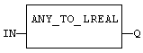
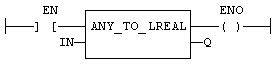

Operator
Converts the input into double precision real value.
|
Name |
Type |
Description |
|
IN |
ANY |
Input value. |
|
Name |
Type |
Description |
|
Q |
LREAL |
Value converted to double precision real. |
For BOOL input data types, the output is 0.0 or 1.0. For DINT input data type, the output is the same number. For TIME input data types, the result is the number of milliseconds. For STRING inputs, the output is the number represented by the string, or 0.0 if the string does not represent a valid number. In LD language, the conversion is executed only if the input rung (EN) is TRUE. The output rung (ENO) keeps the same value as the input rung. In IL Language, the ANY_TO_LREAL function converts the current result.
Q := ANY_TO_LREAL (IN);

The conversion is executed only if EN is TRUE.
ENO keeps the same value as EN.
